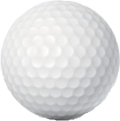
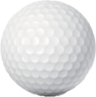

Equipment
Equipment
Equipment
Equipment


 

Wedges have a special angled head which is meant to be used under special conditions in order to lob the ball. Wedges are mainly used in sand pits, the idea behind the angled head of the wedge is to cause the ball to fly high above any obstables.
Drivers/Woods have long shafts and a rounded head, they are used to hit the ball over a long distance. The Driver/Wood has the lightest head and a almost flat surface this allows them to be swung fast and hard which will make the ball fly as far as it can. They are mainly used at the tee off as the first shot in order to get the ball as close to the hole as possible.
The Iron has a short shaft and a heavy flat or angld head, this makes the Iron one of the most versatile club. The Irons main job is to propel the ball towards the hole with different Irons allowing different distances based on the user, Irons can be used to tee off or anywhere along the golf course to get the ball closer to the hole
Putters have the shortest shaft and the flattest head, the head is usally flat and almost block like. The Putters main use is to hit the ball a short distance into the hole, mainly used on the green the putter hits the ball making it roll towards the hole and finishing the game.